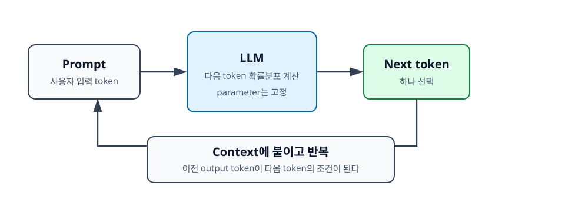

1장. LLM 추론이란 무엇인가¶
LLM을 API로 호출하면 겉보기에는 일반적인 함수 호출처럼 보인다. 문자열을 보내고, 문자열을 돌려받는다. 하지만 내부에서 일어나는 일은 일반적인 웹 API나 데이터베이스 조회와 다르다. LLM은 이미 정해진 답을 찾아서 반환하는 시스템이 아니라, 거대한 신경망을 실행하면서 다음에 올 token을 하나씩 계산하는 시스템이다.
이 장의 목표는 LLM 추론을 너무 낮은 수준의 수식으로 들어가기 전에, 개발자가 성능 문제를 이해하는 데 필요한 기본 틀을 잡는 것이다. 앞으로 계속 등장할 prefill, decode, KV cache, batching, 병렬화 같은 개념은 모두 "LLM이 고정된 parameter로 token을 순서대로 생성한다"는 사실에서 출발한다.

학습 목표¶
- 학습과 추론의 차이를 설명한다.
- LLM이 한 토큰씩 생성되는 이유를 이해한다.
- 추론을 모델, 데이터, 시스템 관점으로 나누어 본다.
1.1 학습과 추론의 차이¶
머신러닝 시스템을 이해할 때 가장 먼저 구분해야 할 것은 학습(training)과 추론(inference)이다. 둘 다 모델을 실행한다는 점에서는 비슷하지만, 목적과 비용 구조가 다르다.
학습은 모델을 더 나은 상태로 만드는 과정이다. 많은 데이터를 사용해 모델의 parameter를 조정한다. 반면 추론은 이미 학습된 모델을 사용해 입력에 대한 출력을 생성하는 과정이다. 일반적인 애플리케이션 개발자가 LLM API를 호출하거나, vLLM으로 오픈소스 모델 서버를 띄우거나, RAG 서비스에서 답변을 생성하는 작업은 대부분 추론에 해당한다.
1.1.1 학습은 parameter를 바꾸는 과정이다¶
Parameter는 모델 안에 저장된 숫자 값이다. Transformer 기반 LLM에는 embedding, attention, MLP 등 여러 layer가 있고, 각 layer에는 거대한 행렬 형태의 parameter가 있다. 학습은 입력 데이터와 정답 또는 선호 신호를 이용해 이 parameter를 조금씩 바꾸는 과정이다.
예를 들어 언어 모델이 "서울은 대한민국의 ___"라는 문장에서 다음 token을 잘 예측하지 못한다면, 학습 과정은 정답에 가까운 token의 확률이 높아지도록 parameter를 조정한다. 이 과정에는 forward pass뿐 아니라 backward pass, gradient 계산, optimizer update가 포함된다. 그래서 학습은 많은 GPU 메모리와 연산량을 요구한다.
개발자가 모델을 직접 학습하지 않더라도 이 구분은 중요하다. 학습 비용과 추론 비용은 서로 다른 문제이기 때문이다. 학습은 모델을 만드는 비용이고, 추론은 사용자가 요청할 때마다 반복해서 발생하는 운영 비용이다.
1.1.2 추론은 고정된 parameter로 token을 생성하는 과정이다¶
추론에서는 parameter를 바꾸지 않는다. 이미 학습된 parameter를 GPU 메모리에 올려 두고, 사용자의 prompt를 입력으로 넣어 다음 token의 확률분포를 계산한다. 그중 하나의 token을 선택하고, 선택된 token을 다시 입력 뒤에 붙여 다음 token을 계산한다. 이 과정을 답변이 끝날 때까지 반복한다.
간단히 말하면 추론은 다음과 같은 반복이다.
prompt -> 다음 token 예측 -> token 선택 -> context에 추가 -> 다음 token 예측 -> ...
이 반복 구조 때문에 LLM 추론은 출력 길이에 민감하다. 사용자가 같은 prompt를 보내더라도 답변을 20 token만 생성할 때와 2,000 token 생성할 때의 비용은 크게 다르다. 출력 token이 많을수록 모델 실행 횟수가 늘어나기 때문이다.
1.1.3 개발자가 주로 마주하는 것은 추론 비용과 latency다¶
대부분의 서비스 개발자는 모델 학습보다 추론 운영에서 먼저 문제를 만난다. 사용자가 "응답이 늦다"고 느끼거나, GPU 메모리가 부족해서 서버가 OOM을 내거나, 동시 요청이 늘면서 처리량이 떨어지는 문제가 대표적이다.
LLM 추론에서 자주 보는 질문은 다음과 같다.
- 첫 token이 왜 이렇게 늦게 나오는가?
- 답변이 stream으로 나오긴 하지만 token 사이 간격이 왜 긴가?
- prompt를 길게 넣으면 왜 비용과 latency가 급격히 늘어나는가?
- 같은 GPU인데 batch size를 조금만 키워도 왜 OOM이 나는가?
- GPU를 여러 장 붙이면 정말 빨라지는가?
이 질문들은 단순히 "모델이 크다"는 말로는 충분히 설명되지 않는다. Prompt를 처음 처리하는 prefill 단계, token을 하나씩 생성하는 decode 단계, 이전 token의 정보를 저장하는 KV cache, 여러 요청을 묶는 batching, 그리고 GPU 간 통신을 동반하는 병렬화까지 함께 봐야 한다.
1.2 LLM은 왜 한 토큰씩 생성하는가¶
LLM이 느리게 느껴지는 가장 큰 이유 중 하나는 답변 전체를 한 번에 생성하지 못한다는 점이다. 일반적인 프로그램 함수라면 내부 계산을 마친 뒤 결과 문자열을 한 번에 반환할 수 있다. 그러나 autoregressive LLM은 다음 token을 예측하고, 그 token을 다시 조건으로 사용해 그다음 token을 예측한다.
1.2.1 Autoregressive generation의 의미¶
Autoregressive generation은 이전에 생성된 값을 다음 생성의 입력으로 사용하는 방식이다. 언어 모델에서는 이전 token들이 다음 token을 예측하는 조건이 된다.
예를 들어 모델이 다음 문장을 생성한다고 하자.
LLM 추론은 token을 하나씩 생성한다.
모델은 처음부터 이 문장 전체를 완성된 문자열로 뽑아내는 것이 아니다. 먼저 LLM 다음에 올 token 분포를 계산하고, 선택된 token을 context에 붙인다. 그다음 LLM 추론은이라는 context를 보고 다음 token을 계산한다. 이런 식으로 매 단계의 출력이 다음 단계의 입력이 된다.
이 구조는 자연어 생성 품질에는 유리하다. 앞에서 어떤 단어를 선택했는지에 따라 뒤 문장이 자연스럽게 이어질 수 있기 때문이다. 하지만 시스템 관점에서는 순차 의존성이 생긴다. 100번째 output token을 계산하려면 1번째부터 99번째 output token이 먼저 정해져 있어야 한다.
1.2.2 이전 token이 다음 token의 조건이 되는 구조¶
LLM은 매 단계에서 "지금까지의 context가 주어졌을 때 다음 token은 무엇일 가능성이 높은가"를 계산한다. 여기서 context에는 사용자의 prompt뿐 아니라 이미 생성된 output token도 포함된다.
예를 들어 prompt가 다음과 같다고 하자.
KV cache를 초보자에게 설명해 줘.
모델이 첫 token으로 KV를 생성했다면, 다음 단계의 입력은 원래 prompt에 KV가 붙은 상태가 된다. 이후 cache, 는, 이전 같은 token이 순서대로 선택될 수 있다. 이때 매 token은 앞의 모든 token을 조건으로 삼는다.
이 특성 때문에 LLM 추론에서는 "입력 token 수"와 "출력 token 수"를 분리해서 봐야 한다. 입력 token은 처음 prompt를 읽는 비용에 큰 영향을 준다. 출력 token은 decode 반복 횟수에 직접 영향을 준다.
1.2.3 한 번에 전체 답변을 생성할 수 없는 이유¶
전체 답변을 한 번에 생성하려면 아직 정해지지 않은 앞쪽 token을 모른 채 뒤쪽 token을 계산해야 한다. 하지만 autoregressive 모델에서는 뒤쪽 token의 조건에 앞쪽 token이 포함된다. 즉, 뒤 token은 앞 token이 결정된 뒤에야 정확한 조건을 갖게 된다.
물론 내부적으로 GPU는 한 번의 행렬 연산에서 많은 계산을 병렬로 수행한다. Prefill 단계에서는 prompt 전체 token을 한꺼번에 처리할 수 있다. 그러나 decode 단계에서 새 output token을 생성하는 과정은 순차적이다. 이 차이가 앞으로 다룰 prefill과 decode의 핵심 차이다.
실무적으로는 이 구조가 latency에 직접 드러난다. 긴 답변을 요청하면 전체 응답 완료 시간이 길어진다. Streaming을 켜면 사용자는 첫 token을 빨리 볼 수 있지만, 모델이 뒤 token까지 모두 한 번에 계산하는 것은 아니다. Stream은 사용자 경험을 개선하지만 autoregressive 생성의 순차성을 없애지는 않는다.
1.3 LLM 추론을 보는 세 가지 관점¶
LLM 추론을 이해할 때는 한 가지 관점만으로는 부족하다. 모델 구조만 보면 실제 serving 병목을 놓치기 쉽고, GPU 지표만 보면 왜 특정 요청이 느린지 설명하기 어렵다. 이 책에서는 모델 관점, 데이터 관점, 시스템 관점을 함께 사용한다.
1.3.1 모델 관점: parameter와 layer¶
모델 관점에서는 LLM을 여러 layer로 이루어진 거대한 함수로 본다. 각 layer에는 attention과 MLP가 있고, 그 안에는 큰 행렬 곱이 있다. 모델이 클수록 parameter가 많고, parameter를 저장하기 위한 GPU 메모리도 많이 필요하다.
예를 들어 7B 모델은 대략 70억 개의 parameter를 가진 모델이다. FP16 또는 BF16으로 저장하면 parameter 하나가 보통 2 byte를 사용하므로, 단순 계산으로도 model weight만 약 14GB가 필요하다. 실제 실행에는 activation, temporary buffer, KV cache도 필요하므로 GPU 메모리 요구량은 더 커진다.
모델 관점은 다음 질문에 답하는 데 유용하다.
- 이 모델이 GPU 한 장에 올라가는가?
- Quantization을 적용하면 weight 메모리를 얼마나 줄일 수 있는가?
- Tensor Parallelism으로 layer 내부 계산을 나눌 수 있는가?
1.3.2 데이터 관점: prompt, context, output token¶
데이터 관점에서는 요청 하나를 token sequence로 본다. 사용자가 입력한 prompt가 몇 token인지, 기존 대화 history가 얼마나 긴지, 모델이 몇 token을 출력하는지가 중요하다.
LLM API 비용도 대개 input token과 output token을 기준으로 계산된다. Serving 시스템에서도 token 수는 핵심 변수다. Prompt가 길면 prefill 비용이 증가한다. Context가 길면 KV cache가 커진다. Output token이 길면 decode 반복이 늘어난다.
RAG 서비스에서 자주 발생하는 문제도 데이터 관점으로 보면 이해하기 쉽다. 검색된 문서를 많이 넣으면 답변 품질은 좋아질 수 있지만, prompt token 수가 늘어난다. 그러면 첫 응답 시간이 늦어지고, KV cache가 커져 동시에 처리할 수 있는 요청 수가 줄어들 수 있다.
1.3.3 시스템 관점: latency, throughput, GPU memory¶
시스템 관점에서는 LLM 추론을 운영 중인 서비스로 본다. 여기서 중요한 것은 사용자가 체감하는 latency, 서버가 처리할 수 있는 throughput, GPU memory와 memory bandwidth, 그리고 여러 GPU를 사용할 때의 network communication이다.
Latency도 하나의 숫자로만 보면 부족하다. 첫 token이 나오기까지의 시간인 TTFT(Time To First Token)와 token 사이 간격인 TPOT(Time Per Output Token)는 서로 다른 병목을 가리킬 수 있다. 긴 prompt 때문에 TTFT가 느릴 수도 있고, decode 단계의 KV cache 접근 때문에 TPOT가 느릴 수도 있다.
Throughput 역시 requests per second만 보면 오해가 생긴다. LLM 요청은 입력 길이와 출력 길이가 크게 다를 수 있다. 짧은 질문 100개와 긴 문서 요약 100개는 같은 요청 수라도 GPU가 해야 하는 일이 전혀 다르다. 그래서 tokens per second, goodput, latency SLO를 함께 봐야 한다.
GPU memory는 LLM serving의 가장 직접적인 제약이다. Model weight가 들어가야 하고, 실행 중인 요청들의 KV cache도 들어가야 한다. 단일 사용자의 긴 context도 부담이지만, 여러 사용자의 동시 요청이 쌓이면 KV cache가 빠르게 커진다. 그래서 추론 병렬화는 단순히 속도를 높이는 기술이 아니라, 메모리 한계를 넘기 위한 기술이기도 하다.
정리¶
LLM 추론은 고정된 parameter를 가진 모델이 token을 순서대로 생성하는 과정이다. 학습과 달리 parameter를 바꾸지는 않지만, 사용자의 요청마다 반복적으로 GPU 자원을 사용한다. Autoregressive 구조 때문에 output token은 순차적으로 생성되고, 이로 인해 prefill과 decode의 성격이 달라진다.
앞으로 이 책에서는 LLM 추론을 모델, 데이터, 시스템 관점으로 오가며 설명한다. 모델 관점은 parameter와 layer를 이해하게 해 준다. 데이터 관점은 prompt, context, output token이 비용을 어떻게 바꾸는지 보여 준다. 시스템 관점은 latency, throughput, GPU memory, 병렬화 전략을 판단하는 기준을 제공한다.
점검 질문¶
- 학습과 추론은 어떤 값을 바꾸는지 기준으로 어떻게 구분되는가?
- LLM API 호출 latency는 왜 출력 토큰 수에 영향을 받는가?
- 모델 관점과 시스템 관점은 같은 추론 요청을 어떻게 다르게 바라보는가?
다음 장으로¶
다음 장에서는 Transformer 추론의 큰 그림을 살펴본다. Embedding, self-attention, MLP가 어떤 순서로 동작하는지, 그리고 KV cache가 왜 attention 구조에서 자연스럽게 등장하는지 이해하는 것이 목표다.